Catálogo Oficial de Episodios en Spotify (1 al 17)
Explora los títulos oficiales de la serie y descarga las investigaciones técnicas en PDF/HTML asociadas a cada episodio.
 EPISODIO 17
EPISODIO 17
El PLC Huérfano: ¿Qué pasa cuando tu máquina falla y NO tienes respaldo del código?
Analizamos las causas por las que un controlador borra su programa (descarga de batería de litio, corrupción de memoria SD) y cómo la Bóveda Digital de Robologix evita paros no planificados.
- Causas de pérdida de código RAM y corrupción en SD.
- Riesgo de uploads des-compilados sin tags ni comentarios.
- Bóveda Digital y resguardo preventivo 24/7.
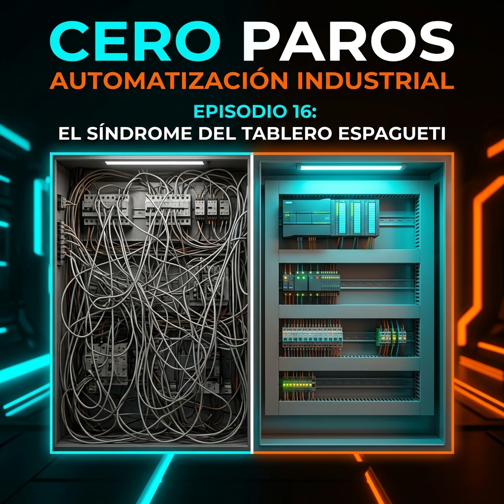
EPISODIO 16El Síndrome del Tablero Espagueti: Horas de paro por falta de diagramas y etiquetas
Exponemos cómo los gabinetes desordenados y la falta de planos unifilares disparan el Tiempo Medio de Reparación (MTTR) de 15 minutos a más de 6 horas.
- Causas raíz del desorden eléctrico en planta.
- Riesgo de arcos eléctricos y fallas en tarjetas I/O.
- Levantamiento e ingeniería inversa en EPLAN/CAD.
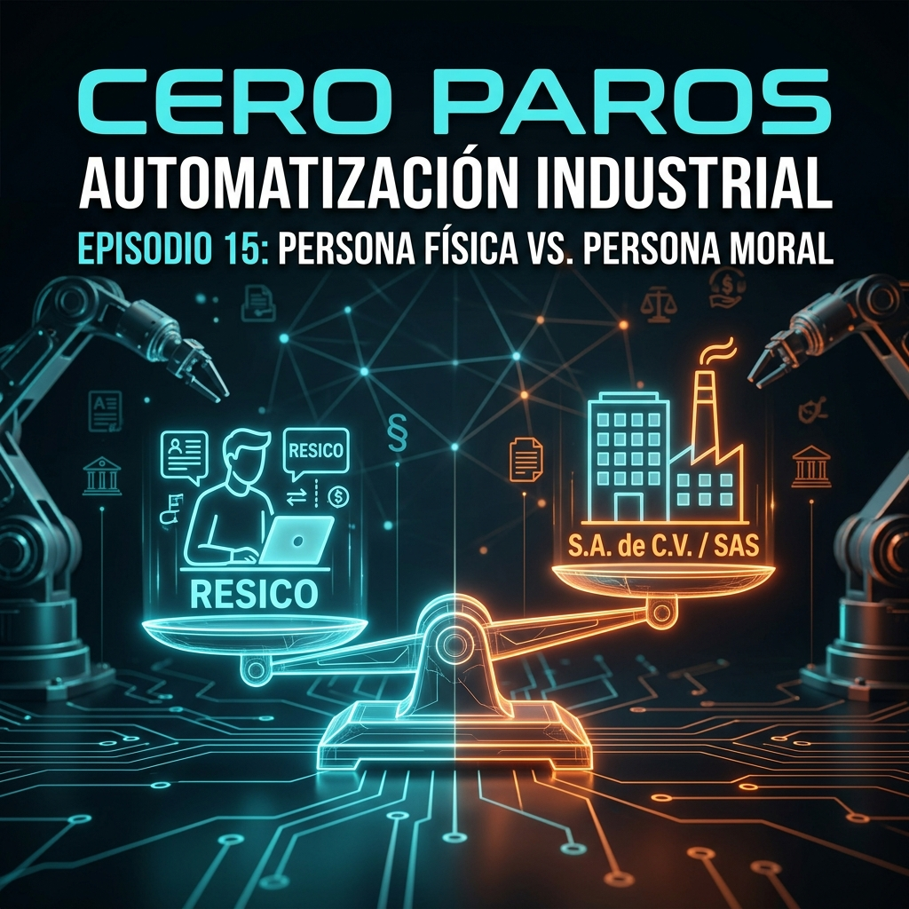
EPISODIO 15¿Persona Física o Persona Moral? Estructuración Legal y Fiscal para Proveedores
Evaluación del impacto en blindaje patrimonial, tasas de ISR (RESICO vs Régimen General) y exigencias de Vendor Onboarding en plantas automotrices Tier-1.
- Protección patrimonial y límites de responsabilidad.
- Por qué los OEMs exigen Personas Morales.
- Estrategia de escalabilidad de RESICO a S.A. de C.V.
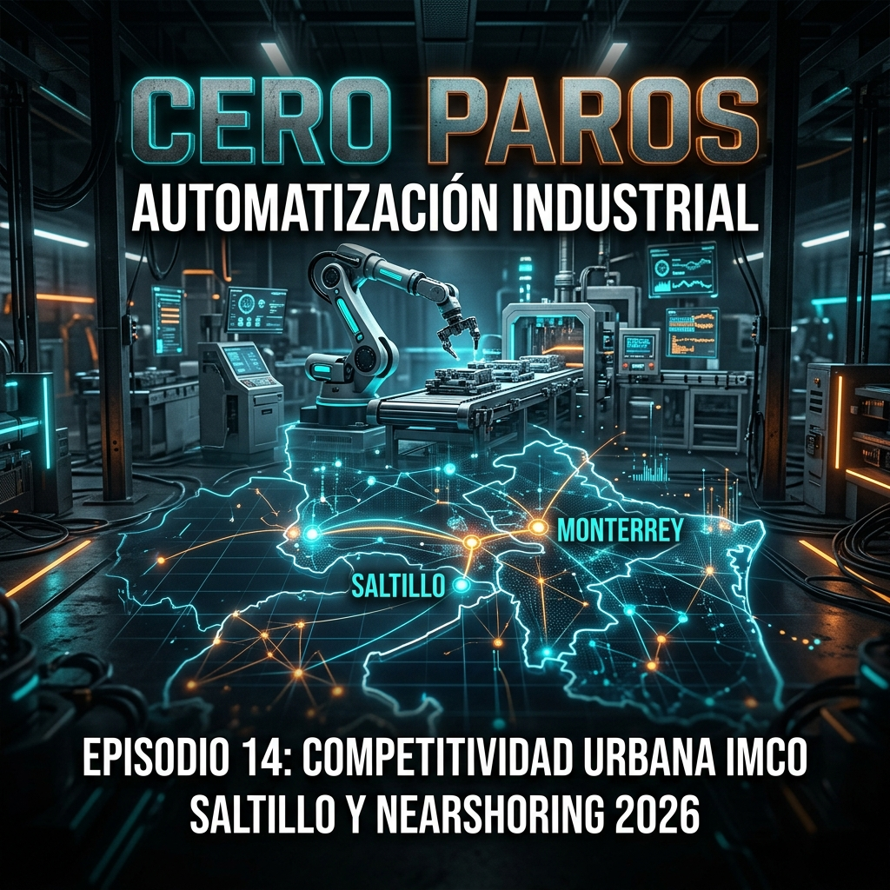
EPISODIO 14Índice de Competitividad Urbana (IMCO): Por qué Saltillo y el Noreste Lideran el Nearshoring
Análisis del reporte IMCO 2026 donde la Zona Metropolitana de Saltillo ocupa el 4° lugar nacional, su baja informalidad laboral (25.55%) y retos de automatización.
- Liderazgo industrial de Saltillo y Monterrey.
- Requerimientos de automatización en Nearshoring.
- Solución de retos de capacidad eléctrica en planta.
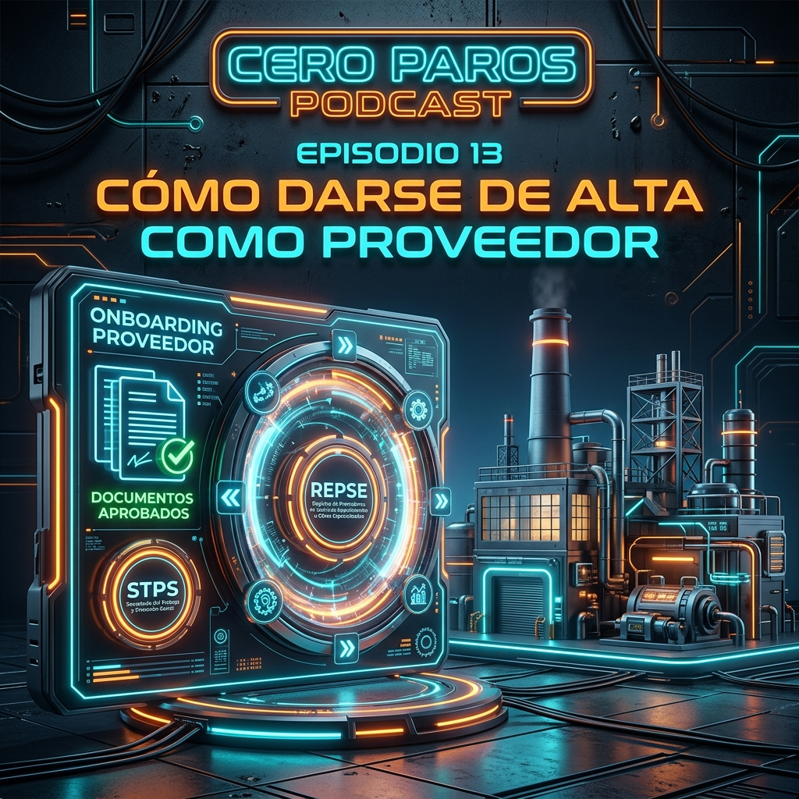
EPISODIO 13Cómo darse de alta como proveedor en grandes empresas (Vendor Onboarding)
Guía paso a paso para navegar portales de compras (SAP Ariba, Coupa), cumplimiento fiscal SAT 32-D, constancias STPS DC-3 y financiamiento a crédito.
- Proceso de pre-calificación y obtención de Vendor Number.
- Lista de verificación legal y fiscal en México.
- Manejo de crédito a 60/90 días y factoraje.
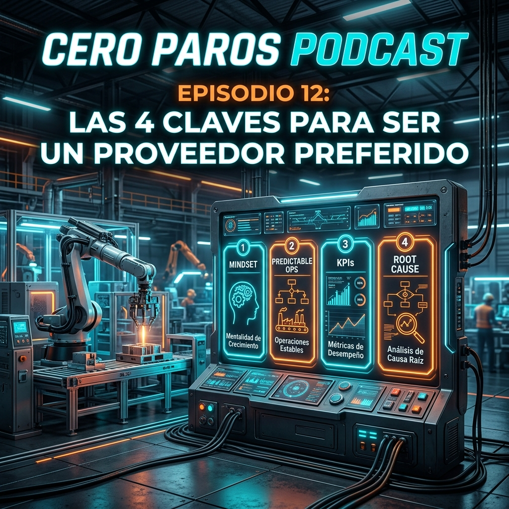
EPISODIO 12Las 4 Claves para Ser un Proveedor Preferido de las Grandes Empresas (Reporte CCMTY)
Análisis del Capitulo 12 de la Cátedra de CADELEC / CCMTY sobre los criterios de selección de proveedores en la industria manufacturera.
- Capacidad técnica y tiempos de respuesta.
- Flexibilidad operativa y soporte en sitio.
- Solvencia financiera e importación exprés.
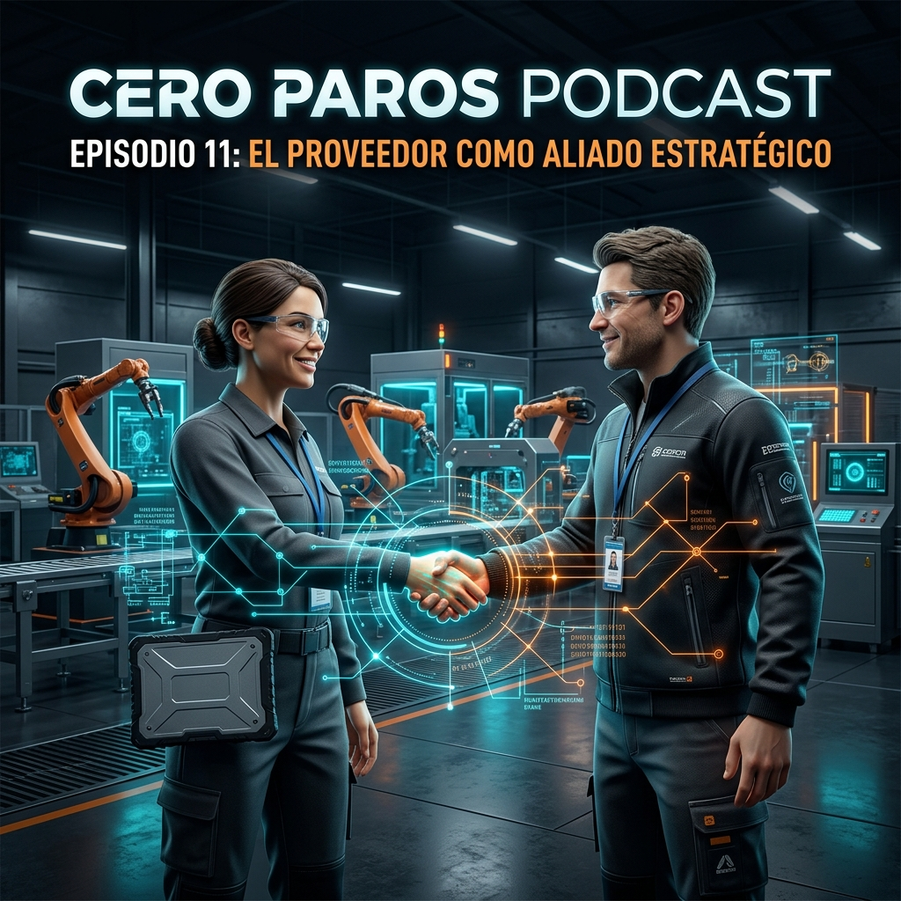
EPISODIO 11El Proveedor Especializado como Aliado Estratégico: Tu multiplicador de ingeniería
Por qué intentar resolver proyectos complejos in-house genera ineficiencias financieras y cómo ver al proveedor como un multiplicador operativo.
- Modelo OpEx vs. Costos Fijos permanentes.
- Cero experimentación en líneas de producción.
- Agilidad en refacciones e importaciones.
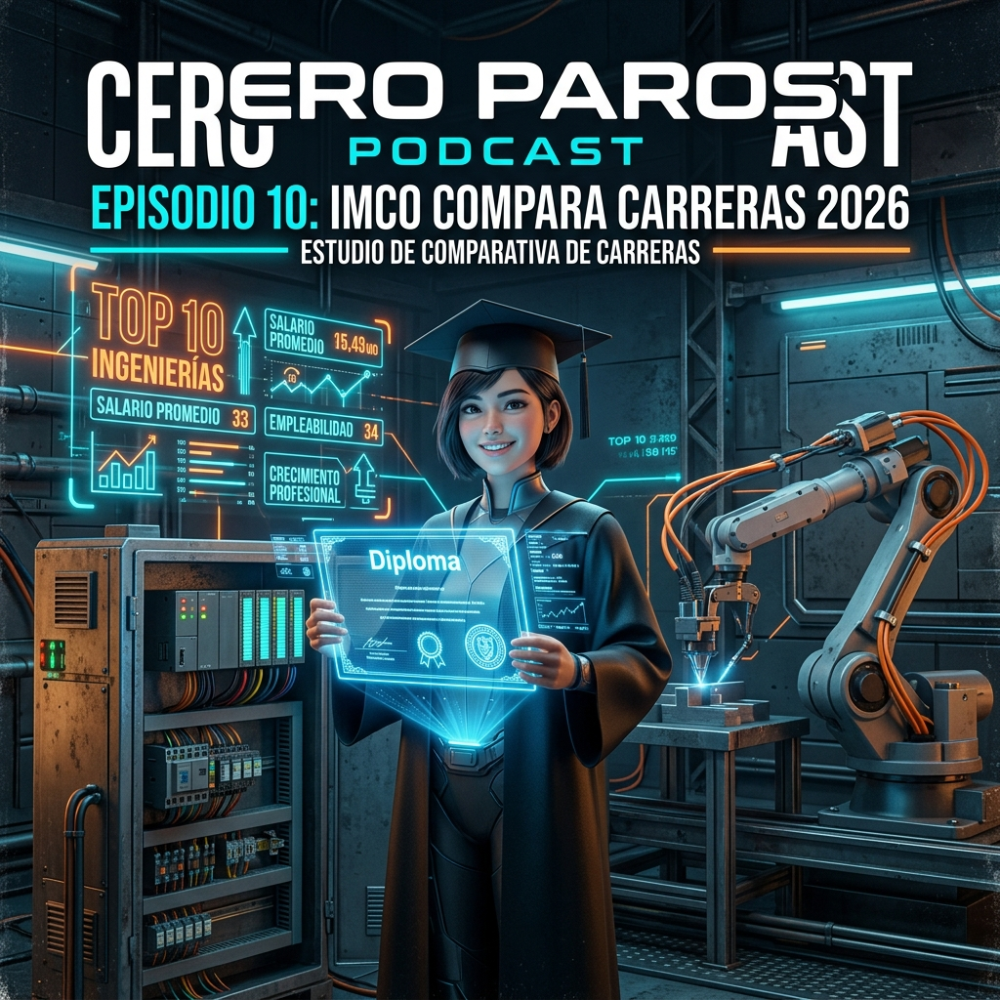
EPISODIO 10IMCO Compara Carreras 2026: El panorama de Automatización y Mecatrónica en México
Estudio del reporte IMCO sobre las carreras técnicas y universitarias en automatización, demanda de talento y competencias clave.
- Posicionamiento de Mecatrónica y Electrónica.
- Habilidades técnicas más cotizadas en la industria.
- Brechas de empleabilidad y capacitación STPS.
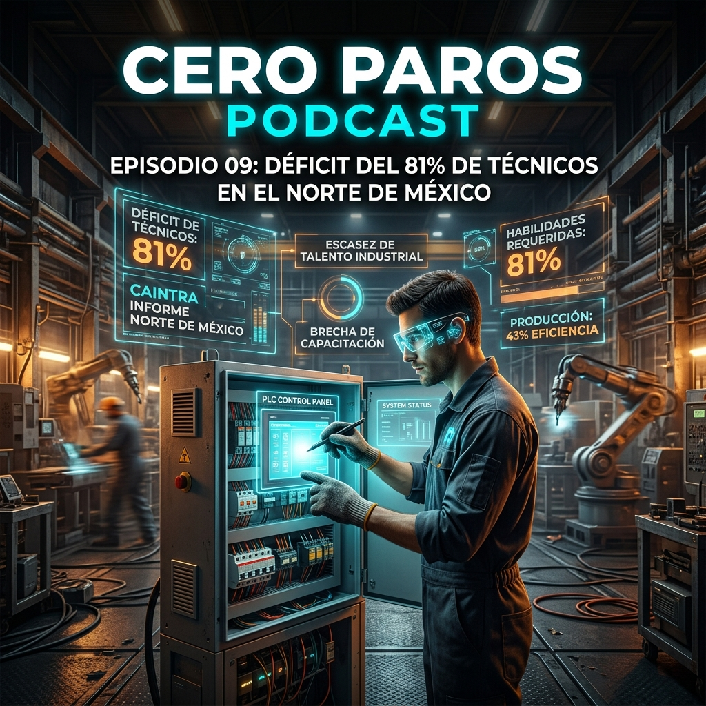
EPISODIO 09Episodio 9 | Alerta en el Norte: El Déficit de Técnicos y la Solución con Automatización
Análisis del reporte de CAINTRA Nuevo León sobre la escasez crítica del 81% de mano de obra técnica y cómo la automatización robótica resuelve la vacancia laboral.
- Impacto de la vacancia técnica en manufactura.
- Absorción de tareas repetitivas mediante Cobots.
- Programas de certificación DC-3 de personal.
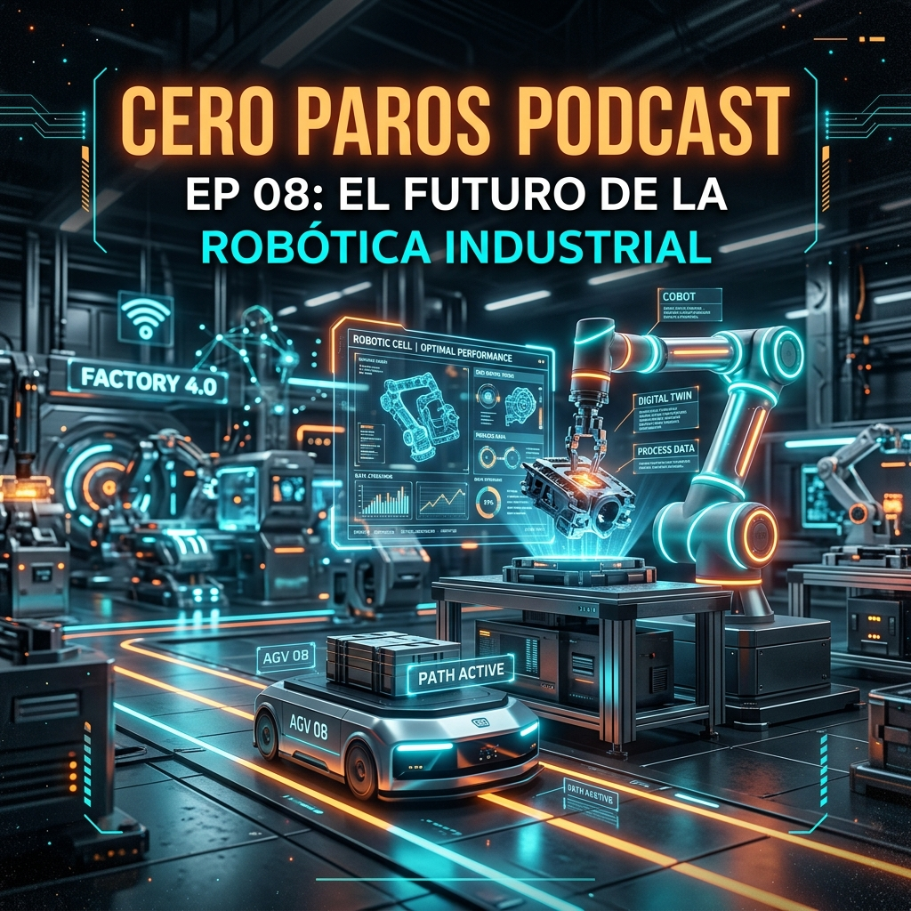
EPISODIO 08Episodio 8 | El Futuro de la Robótica Industrial: Cobots & AMRs
Evolución de la robótica colaborativa y los robots móviles autónomos (AMR) en las plantas de ensamblaje de Saltillo, Ramos Arizpe y Monterrey.
- Diferencias entre Robots Industriales y Cobots.
- Logística interna optimizada con AMRs.
- Normas de seguridad interactiva ISO 10218.
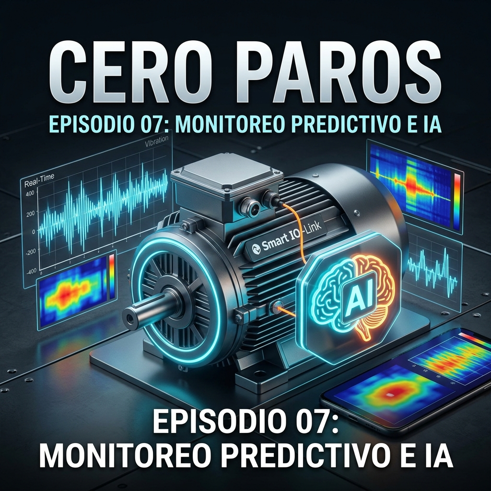
EPISODIO 07Episodio 7 | El Fin de los Paros Indeseados: Monitoreo Predictivo e IA
Implementación de sensores de vibración y temperatura IO-Link conectados a modelos predictivos para evitar fallas mecánicas en motores y reductores.
- Monitoreo en tiempo real de salud de activos.
- Integración de IO-Link Master con PLC.
- Algoritmos de FFT para detección de fallas.
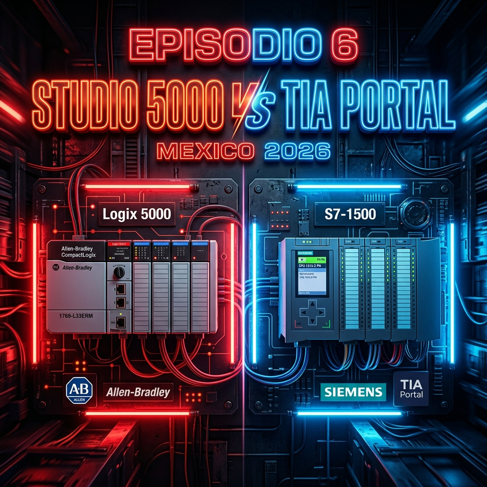
EPISODIO 06Episodio 6 | Studio 5000 vs TIA Portal: ¿Cuál domina en México?
Comparativa técnica entre las dos plataformas de automatización más dominantes del mercado: Allen-Bradley Logix vs. Siemens SIMATIC.
- Diferencias de arquitectura de software y tags.
- Redes deterministas EtherNet/IP vs Profinet.
- Criterios de elección por sector industrial.
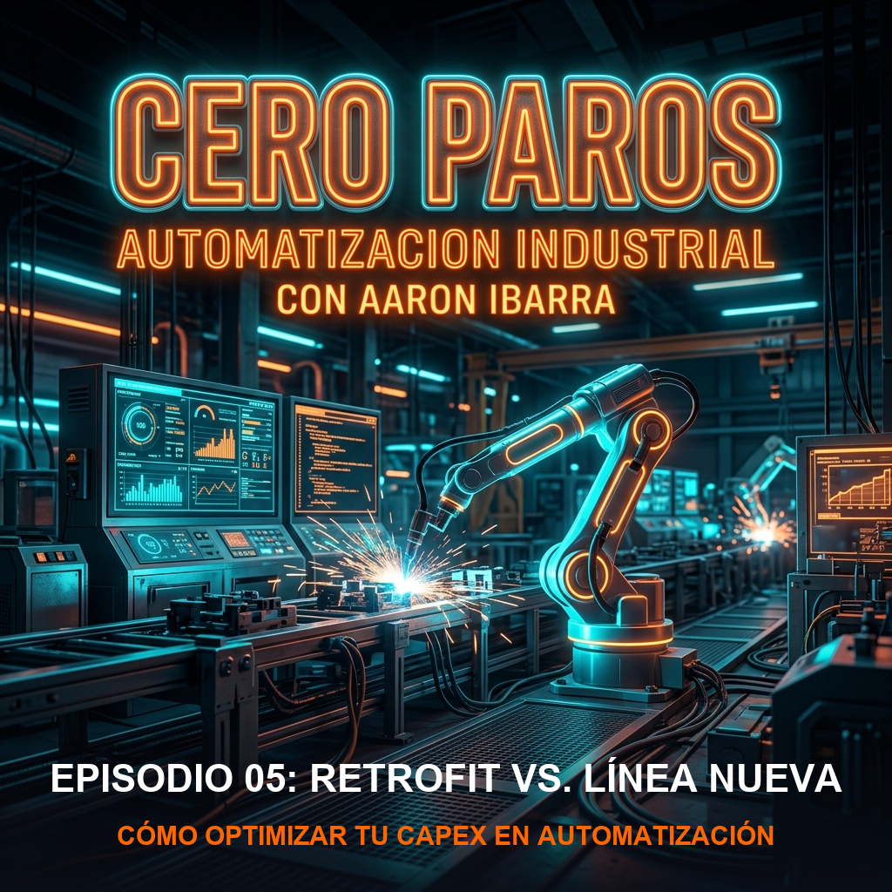
EPISODIO 05Episodio 5: Retrofit vs Línea Nueva
Análisis de costo-beneficio entre actualizar tableros y PLCs existentes frente a invertir en una línea completa nueva, ahorrando hasta 60% de CapEx.
- Análisis financiero de CapEx vs OpEx.
- Actualización de gabinetes en ventanas cortas.
- Integración de sensores modernos en máquinas legacy.
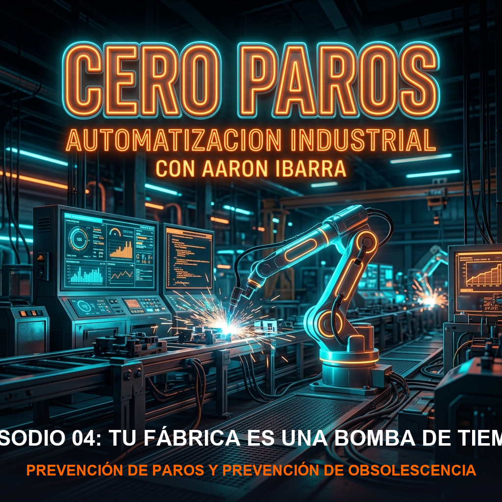
EPISODIO 04Episodio 4: Tu fábrica es una bomba de tiempo
Por qué mantener PLCs descontinuados (SLC 500, S7-300), tableros sin diagramas y cero respaldos pone a tu planta en riesgo crítico de paro prolongado.
- Riesgos de paros no planificados por obsolescencia.
- Identificación de componentes vulnerables.
- Planes de prevención y migración por etapas.
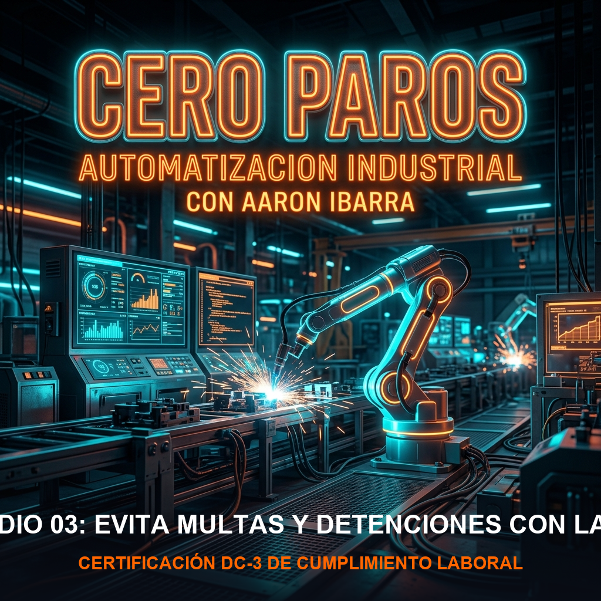
EPISODIO 03Episodio 3: Evita multas y detenciones con la STPS (DC-3)
La importancia de certificar las habilidades laborales de tu personal técnico con constancias STPS DC-3 en PLC y Robótica para superar auditorías.
- Cumplimiento normativo ante inspecciones STPS.
- Certificación oficial en Studio 5000 y TIA Portal.
- Reducción de riesgos de trabajo en piso.
Episodio 2: ¿Ganas más que un gerente? El salario de un programador de PLC al descubierto
En este episodio, analizamos a fondo la realidad económica de los especialistas en automatización en el clúster industrial del norte de México con el boom del nearshoring.
- Posicionamiento y valor profesional de la especialidad en PLC.
- Competencias técnicas y gerenciales más valoradas en el mercado.
- Desarrollo de carrera técnica y consultoría en automatización.
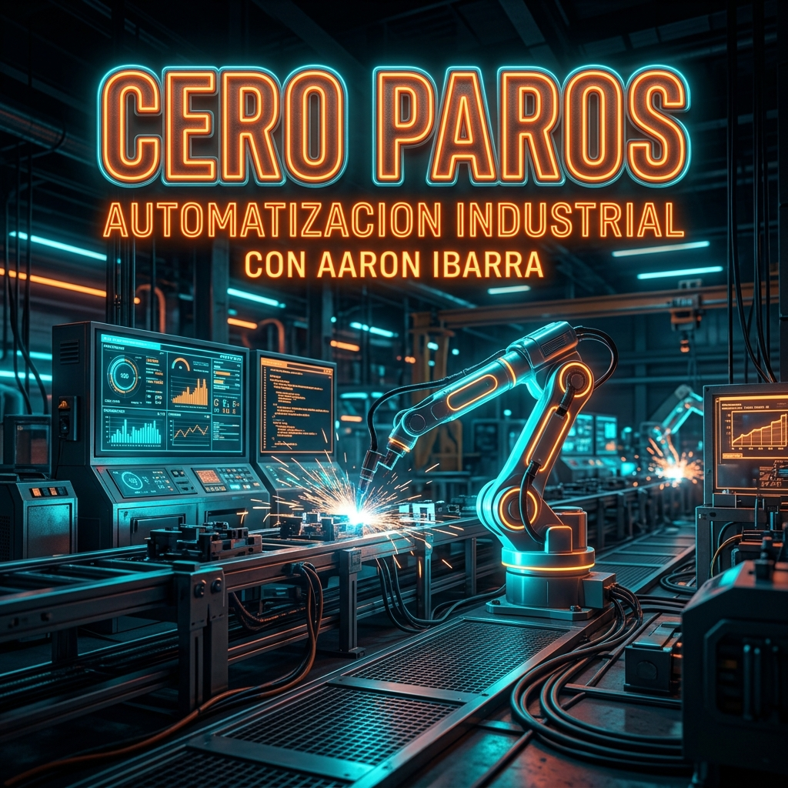
EPISODIO 01Episodio 1: Menos Estrés, Cero Paros: El Lado Humano de la Automatización
¿Es posible hablar de robótica de última generación, PLCs y celdas industriales poniendo a las personas en el centro? Analizamos la propuesta de Robologix Automation.
- La filosofía operativa de Robologix Automation.
- Cómo eliminar el estrés y la preocupación por fallas en planta.
- Estrategia de estabilidad operativa y lado humano en líneas.